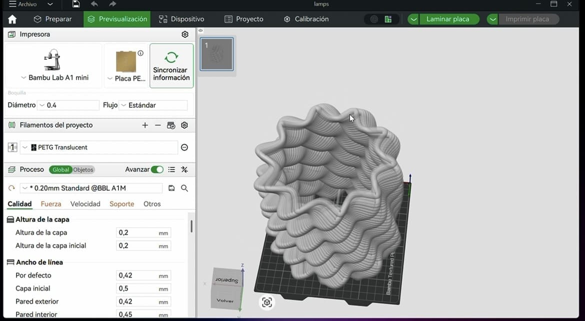
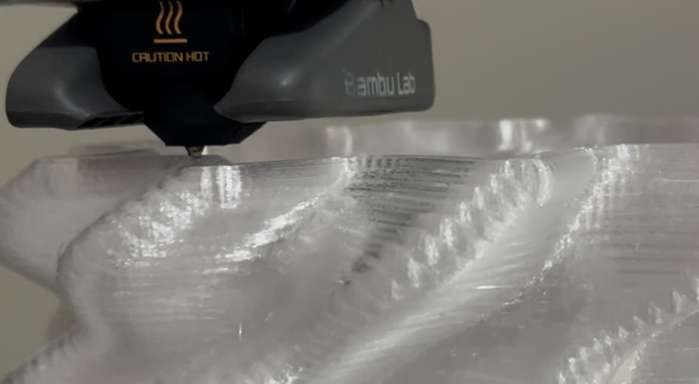
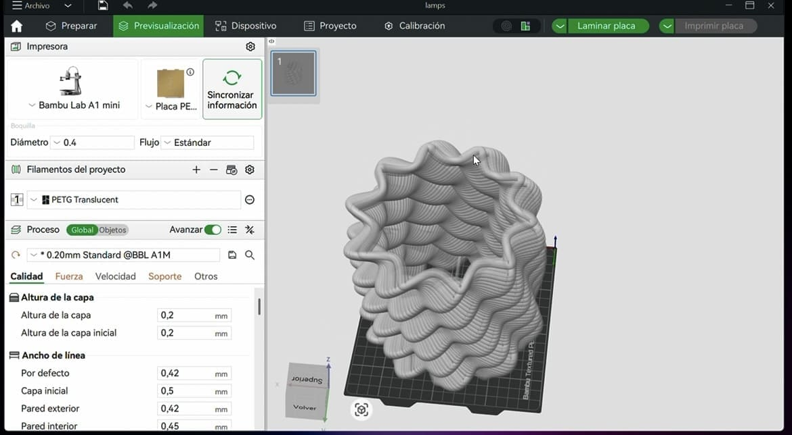
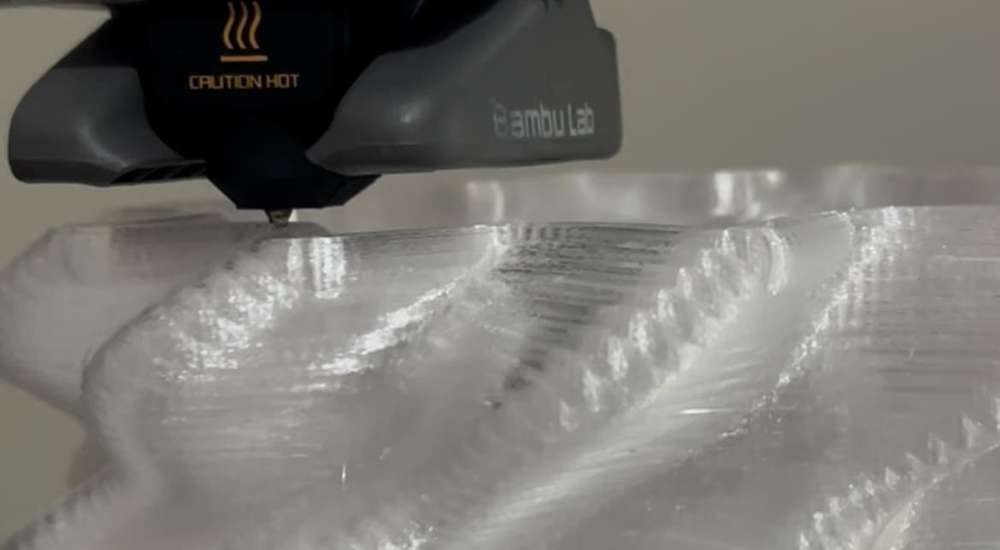
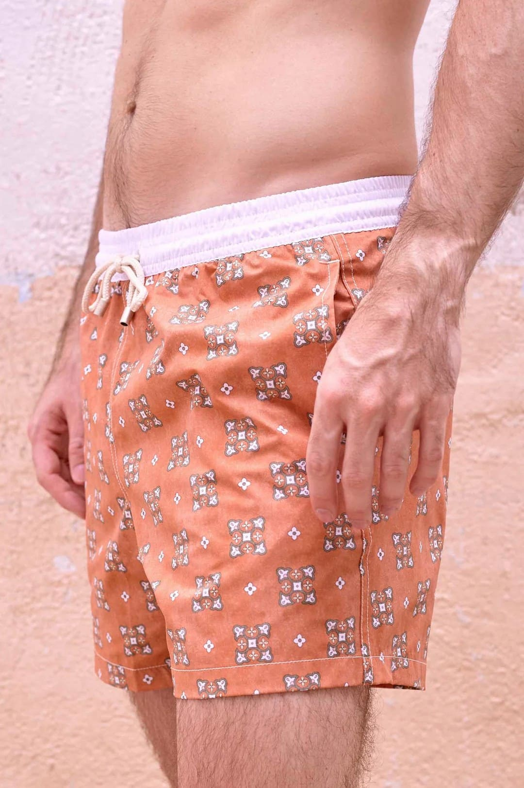
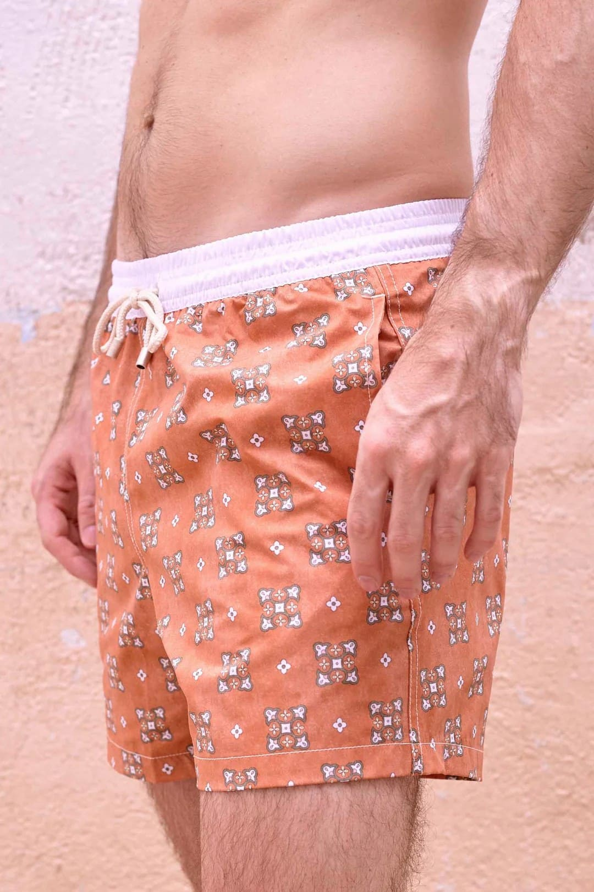

Me apasiona transformar ideas en objetos posibles y funcionales, explorando el equilibrio entre
estética y uso. Creo en un diseño con intención, capaz de ir más allá de lo evidente para
aportar significado, sensibilidad y coherencia a cada proyecto. Disfruto cada etapa del proceso
creativo: investigar, dibujar, prototipar, modelar en 3D y materializar soluciones que cuentan
una historia y dialogan con su contexto. Me defino como una persona curiosa, proactiva y
resolutiva, en constante aprendizaje. Busco detectar tendencias, experimentar con nuevas formas
de crear y adaptarme a los retos del diseño contemporáneo, aportando siempre una mirada fresca,
creativa y consistente.
.
Passionate about transforming ideas into feasible and functional objects, my work explores the
balance between aesthetics and use. I believe in design with intention, one that goes beyond the
obvious to bring meaning, sensitivity, and coherence to each project. The creative process is
central to my practice, from research and sketching to prototyping, 3D modeling, and
materializing solutions that tell a story and engage with their context. Curious, proactive, and
resourceful by nature, I am constantly learning, identifying trends, and experimenting with new
ways of creating, adapting to the challenges of contemporary design while contributing a fresh,
thoughtful, and consistent perspective.
Experiencia en la fabricación de joyas en porcelana, abarcando todo el proceso desde la preparación del material hasta el acabado, control de calidad y embalaje. Manejo de componentes metálicos, montaje final de piezas y desarrollo de plantillas y prototipos mediante modelado e impresión 3D.
Encargada de la conceptualización y desarrollo de una amplia gama de productos para la marca, reflejando su identidad. Estando presente en todas las etapas del proceso, desde el diseño hasta su comercialización.
UDIT, Universidad de Diseño, Innovación y Tecnología.
Madrid, España.
Basics of Innovation Management
Certificate ID: 322944-161-127-5324
Leadership and Team Development
Certificate ID: 322944-161-222-7803
Inglés (EF Certificado 70/C1 - Avanzado)
Español - Nativo
Nace de la experimentación con el diseño paramétrico, dejando atrás la espiral tradicional para explorar un lenguaje más fluido y controlado. Las ondas construyen la forma y dirigen la luz, generando un movimiento suave que cambia según el punto de vista y el espacio. El resultado es una pieza donde la geometría y la luz se entienden como un mismo gesto.
It emerges from experimentation with parametric design, moving beyond the traditional spiral to explore a more fluid and controlled language. The waves shape the form and guide the light, creating a soft movement that changes with the viewpoint and the surrounding space. The result is a piece where geometry and light are understood as a single gesture.
 



Colección de pendientes que re-imagina la colonización colombiana desde un futuro
alternativo, donde las culturas indígenas triunfan. Fusiona estética indígena Colombiana y
medieval con diseño 3D, simbolizando resistencia, tradición e innovación.
.
A collection of earrings reinterpret the Colombian colonization from an alternative
future where the Indigenous cultures triumph. Merges indigenous Colombian aesthetics and
medieval with 3D design, symbolizing resistance, tradition and innovation.
Creada en colaboración con Dior, ofrece una experiencia inmersiva que equilibra lujo y sostenibilidad. La caja combina cartón con textil reciclado que aportan color y simbolizan compromiso ambiental. Su diseño versátil incluye espacio para obsequios, hecho con rafia reciclada, y una carta personalizada, reforzando la exclusividad y conexión emocional con el personal de Dior.
Created in collaboration with Dior, it provides an immersive experience that balances luxury and sustainability. The box combines cardboard with recycled textiles, adding color while symbolizing environmental commitment. Its versatile design includes space for gifts made with recycled raffia and a personalized note, enhancing exclusivity and fostering an emotional connection with Dior's staff.
Colección de bermudas masculinas para Old Jeffrey, que emplea diversas gamas de colores y figuras geométricas con un efecto desgastado, creando un equilibrio entre un estilo moderno y un toque vintage, ideal para destacar con originalidad.
A men's bermuda shorts collection for Old Jeffrey, featuring a diverse color palette and geometric patterns with a distressed finish, striking a refined balance between contemporary design and vintage appeal, ideal for making a distinctive statement.
 

Un fragmento de luz...
Conexión entre la luz y el universo, simbolizando el equilibrio orbital y el
dinamismo cósmico.
Sus órbitas evocan el movimiento planetario mientras la base rocosa refleja
solidez y
estabilidad, ofreciendo un contraste entre lo etéreo y lo terrenal. Sus
laterales están
diseñados para servir como prácticos sujetalibros, integrando versatilidad y
elegancia en un
solo objeto. Soleris, una obra que transforma cualquier ambiente con su
presencia escultórica y
simbólica.
.
Connection between light and the universe, symbolizing orbital balance and
cosmic dynamism.
Their orbits evoke planetary motion while the rocky base reflects solidity and
stability,
offering a contrast between the ethereal and the earthly. Its sides are designed
to serve as
practical bookbinders, integrating versatility and elegance in a single object.
Soleris, a work
that transforms any environment with its sculptural and symbolic presence.
Transforma mezclas, eleva tu coctelería
Giralia, un botellero colgante giratorio desarrollado en colaboración con el
Restaurante
Quimbaya by Edwin Rodriguez ubicado en Madrid, España. Diseñado para optimizar
el espacio
superior de la barra de cocktails, que combina funcionalidad y estética para el
almacenamiento
de botellas, demostrando así la capacidad innovadora en el diseño de productos
para la
hostelería.
.
Giralia, a rotating hanging bottle rack developed in collaboration with Quimbaya
Restaurant by
Edwin Rodriguez located in Madrid, Spain. Designed to optimize the upper space
of the cocktail
bar, it combines functionality and aesthetics for bottle storage, thus
showcasing innovative
capability in product design for the hospitality industry.
For Him, For Her...
Diseño de envase de perfume unisex, inspirado en la obra "Estudio sexual
indiferenciado" de
Teresa Solar. En el arte contemporáneo, la identidad de género es un tema que
muchos artistas
están abordando, y Solar desafía las etiquetas tradicionales. Este diseño
reflexiona sobre la
diversidad sexual y la no conformidad con las categorías de género en la vida
cotidiana. La obra
de Solar nos recuerda que las personas van más allá de las etiquetas de hombre o
mujer, llamando
a la diversidad y desafiando los moldes establecidos.
.
Perfume packaging design, inspired by Teresa Solar's artwork "Indifferent Sexual
Study". In
contemporary art, gender identity is a theme many artists are exploring, and
Solar challenges
traditional labels. This design reflects on sexual diversity and non-conformity
with gender
categories in everyday life. Solar's work reminds us that people transcend
labels of man or
woman, advocating for diversity and challenging established norms.
Ondas de bienestar
Zen tide es más que una apariencia estética: brinda una experiencia sensorial
para disfrutar un
momento de tranquilidad y explorar la salud mental y física. Cada onda
representa cuerpo, mente
y espíritu, invitándote a conectar con tus sentidos, encontrar equilibrio mental
y sumergirte en
una experiencia espiritual. Al descorchar y saborear cada vino, se crea un
espacio para la
relajación, la contemplación y el crecimiento personal.
.
Zen tide is more than an aesthetic appearance: it provides a sensory experience
to enjoy a
moment of tranquility and explore mental and physical health. Each wave
represents body, mind
and spirit, inviting you to connect with your senses, find mental balance and
immerse yourself
in a spiritual experience. Uncorking and tasting each wine creates a space for
relaxation,
contemplation and personal growth.